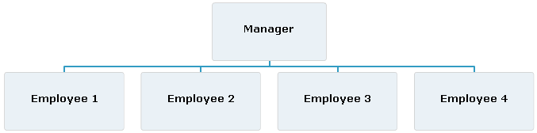

The default layout is standard. The value of the layout field is standard.
The following figure shows an example of standard layout.

The children of a data provider item can be laid out
differently by the use of a different algorithms: right hanging, left
hanging, or both hanging.
All algorithms allow you to mix different layouts in
the same organization chart. There is also specific treatment available
for assistants.